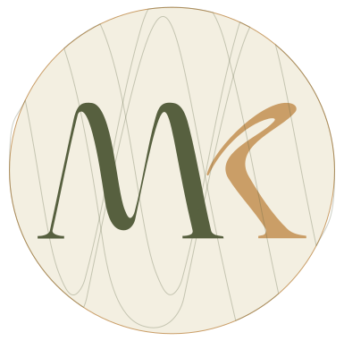

MARC KOUASSI.
DIRECTEUR ARTISTIQUE
BRANDING, PRINT & COMMUNICATION 360°
Directeur artistique, 12 ans d'expérience en agence et en direction de structure créative. À collaboré avec des marques comme Orange, MTN, Solibra et Schneider Electric, et piloté la Météo RTI1 & RTI2. Fondateur d'une agence de 2022 à 2025. Actuellement Lead UX/UI chez Icône Solution, je recherche un poste de Direction Artistique pour recentrer ma carrière sur la création.

EXPÉRIENCE PROFESSIONNELLE
-
PROJECT MANAGER & LEAD UX/UI – ICÔNE SOLUTION
Abidjan | Janvier 2025 – Aujourd’hui
- Dirige plusieurs équipes projet, de la conception à la livraison.
- Structure les processus de création et garantit la cohérence visuelle des produits.
-
FONDATEUR & CEO – M&M CONCEPT
Abidjan | 2022 – 2025
- Crée et dirige une agence organisée en trois pôles : conception print jusqu'à l'impression, maquettes 3D sur mesure, projets 3D complets jusqu'au BAT et à la finition.
- Encadre plusieurs équipes en parallèle sur des projets créatifs et techniques variés.
-
DIRECTEUR ARTISTIQUE - IMPACT COM
Abidjan | 2017 - 2022
- Prend la direction artistique de l'agence et encadre une équipe d'infographistes.
- Pilote la production télévisée de la Météo RTI1 & RTI2.
- Conçoit les campagnes et identités visuelles de PFCTCAL, Groupe Schneider et BNI Finance.
-
INFOGRAPHISTE - IMPACT COM & REEVA PRODUCTION
Abidjan | 2014 – 2017
- Conçoit des supports visuels et exécute des maquettes pour des clients variés.
- Évolue vers la direction artistique après une montée en responsabilité progressive.
-
PREMIÈRES EXPÉRIENCES - GBICH, VOODOO, KAMÉLÉO
Abidjan | 2013 – 2014
- Débute en infographie à travers plusieurs missions courtes en agence.
FORMATION & CERTIFICATIONS
DIPLÔME
- Licence professionnelle en Marketing Digital – ESMA Abidjan (2015)
- BTS en Communication Visuelle – ESMA Abidjan (2013)
- Baccalauréat Série A2 – Abidjan (2010)
CERTIFICAT
- Certificat UX/UI Design - Google / Coursera (2023)
- Certificat en Management de Projet et Méthodes Agiles – OpenClassrooms / PMI (2023)
- Certificat en Design Thinking – IDEO / OpenClassrooms (2022)
FORMATION
- Communication Digitale & Réseaux Sociaux – HubSpot Academy (2022)
- Adobe Creative Suite Avancée – Abidjan Design School (2021)
- Marketing & Branding Digital – African Digital Academy (2020)
COMPÉTENCES IA & INNOVATION
- Intégration de l’IA dans les workflows de création et de communication.
- Rédaction de prompts stratégiques pour contenus textuels, visuels et publicitaires.
- Génération rapide de concepts créatifs, moodboards et campagnes via IA.
FORCES PERSONNELLES
- Esprit stratégique et sens aigu du branding.
- Leadership naturel et capacité à fédérer autour d'une vision.
- Excellente organisation et rigueur.
- Créativité, curiosité et goût pour l'innovation.
QUELQUES AGENCES & STRUCTURES DE RÉFÉRENCE
- Gbich!
- Voodoo
- Kaméléo
- Reeva Production
- Impact Communication
- Sociam
- Seven Days
- Acajou
- Seen Communication
- Nasco
- Dady Shop
- Hisense
- Solibra
- Brassivoire
- Présséa
- Orange
- Schneider Electric
- MTN
- BNI Finances
- PFCTCAL